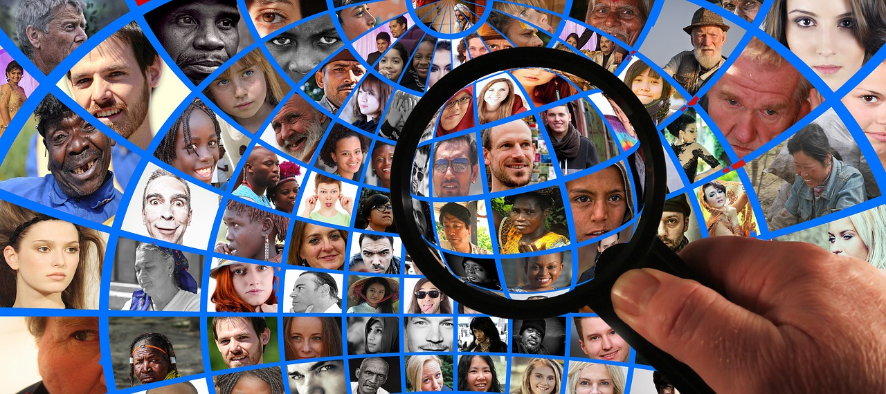

Inclusive design is a moral responsibility
on

If you do a web search on ‘target audience’ you will be blasted with article after article on how important it is to know your audience. We have personas, user journeys and focus groups to learn about the people we want to influence. Everybody invests something in this elusive group of potential customers, clients or donors. Sometimes it’s hundreds of thousands of dollars spent across multiple agencies, sometimes its opinion based on the experience of a marketing director. Getting the right people to carry out the desired action at the right time is something we are all concerned with.
There are no edge cases
In A Designer’s Code of Ethics Mike Monteiro writes “A designer does not believe in edge cases”. Generally, an edge case is considered to be a situation that happens at the extremities of the parameters you are working with. In web development, this should never happen. It can be tempting to relegate some people to the edge. The more bells and whistles on a project the more work is required to ensure everybody can access the content. This work can be frustrating and expensive, but it’s part of the job. Whether a feature of a website is inclusive or not is a deal breaker. If there is no way to give everybody access to the content, the feature should not be built in the first place.
“When you call something an edge case, you’re really just defining the limits of what you care about.”
— Eric Meyer
Why do we exclude people?
There may seem to be many reasons we exclude people from our projects, but in reality, it almost always boils down to money and bias.
When we are deciding how to make a feature on a website, let's say a contact form, there are a number of steps we take. We design, we iterate, we test, we code, we test again. In the design phase, particularly when you get to prototyping, it's fun to add some fancy bells and whistles. Suppose the form fades in as you scroll down the page. The submit button has a beautiful transition on it with some fancy transparent text, it sings a song and brings you coffee. We show this to the client and we get all the anticipated "oooohhhh"s, "aaaaahhhhh"s and "WOW"s. We want to make it. The client wants to have it. We negotiate a price. Since we all want this thing, we don't want to price it out of range. So we make a few concessions to accessibility and leave it at that. I've been in these meetings. We all have. its the meeting where accessibility is seen as a sort of website plumbing. "Yeah, we need it, but I don't want to deal with it any more than I have to".
Human beings are poor examiners, subject to superstition, bias, prejudice, and a PROFOUND tendency to see what they want to see rather than what is really there.
- M. Scott Peck
Our bias is another thing that leads us to leave people behind. We make assumptions about our audiences that are largely based on ourselves. It's hard to get around this, we can't see the forest for the trees so to speak. It's so easy to fall into a pit of assumptions. "I have hardware and a connection that can handle a 4K 10-minute video as a background image, I think we need that on our site!". Actually, when I decide on the video, I'm probably not even considering the hardware and bandwidth. I'm thinking about how cool it is. How it will look to me.
We get our user research going and assume we are good. The lives of our audience is constantly changing though. We move in and out of different circumstances as we go about the business of living, sometimes many times in a day. That's just the people we are thinking about. What about the people we are not thinking about?
We need to make websites work for everybody
we need to work accessibility and inclusive design into project plans and budgets.
In my last blog post, 'We all need accessibility features, whether we know it or not', I wrote about how accessible design is beautiful and benefits us all. We need to remember that.
If the first priority is always the accessibility of the content and the tasks that need to be completed, budgeting the feature is straight forward:
- You can build the fancy version of the contact form and put in the extra time to make it accessible and progressively enhanced.
- You can scale back features and trust the designer's skill to make it look good and be accessible.
- You exclude the feature.
What you should never do is assume that so few people will be affected by any negative consequences of development it's not worth the time and money to do it right.
In our quest to please our audiences, we really need to stop and consider who we are leaving behind.
There is a great deal of talk about empathy in UX and project management. I don't really trust empathy. What do I know about being somebody of a different gender, a different race, a different culture, in a different place, at a different time with different skills, experience and technology? I think we need to be compassionate for sure, but true compassion would be making the effort to reach out to a diverse community and involve them in design and development. We can mitigate some of the risks of making decisions based on our biases by making sure that everyone involved in a project isn't a version of ourselves.
We could, with every feature we build, consciously identify who we are leaving out, treating people as humans and not numbers. It's easy to say "well, people who don't use JavaScript are an edge case and are used to the internet not working properly". It is something else to name those people, give them identities. Perhaps we should be deploying some of the UX tools we have for targeting an audience to identify who we are leaving behind.
Imagine this scenario:
I'm on a team hired to build a site for a company that sells medical supplies. We do all our research and analysis and decide the site should be built using fancy animations and effects. We will use, for example, a javascript cross-fade to show the inside and outside of Medical Tricorder. That would look pretty cool.
Before we start building, let's make some personas for people who will be left out if we proceed this way, particularly personas for people we do not consider to be the target audience.
User Persona
Our site as planned absolutely depends on javascript. Without JS enabled, Samiam will see no content at all. Does this mean we can't use javascript? Of course not. It does mean that we need to have appropriate fall-backs in place. It's OK if she isn't seeing the fancy image swap on the Tricorder, but Samiam does need to be able to access the information about the Tricorder and perform tasks on the site.
Nobody should ever be left out. that should be the goal as we move towards a barrier-free Canada. Being inclusive and democratizing the internet is the whole point of accessibility and progressive enhancement. We want an internet everyone can access, enjoy, and feel safe using. By making sure everybody can use our sites, we are sending a message that we care. Whoever you are, we value you.
This is part one of a three-part series we will be doing on a Barrier Free Canada during January 2019.
- A barrier-free Canada is for everybody! Things to consider before your next site launch
- We all need accessibility features, whether we know it or not
- Inclusive design is a moral responsibility